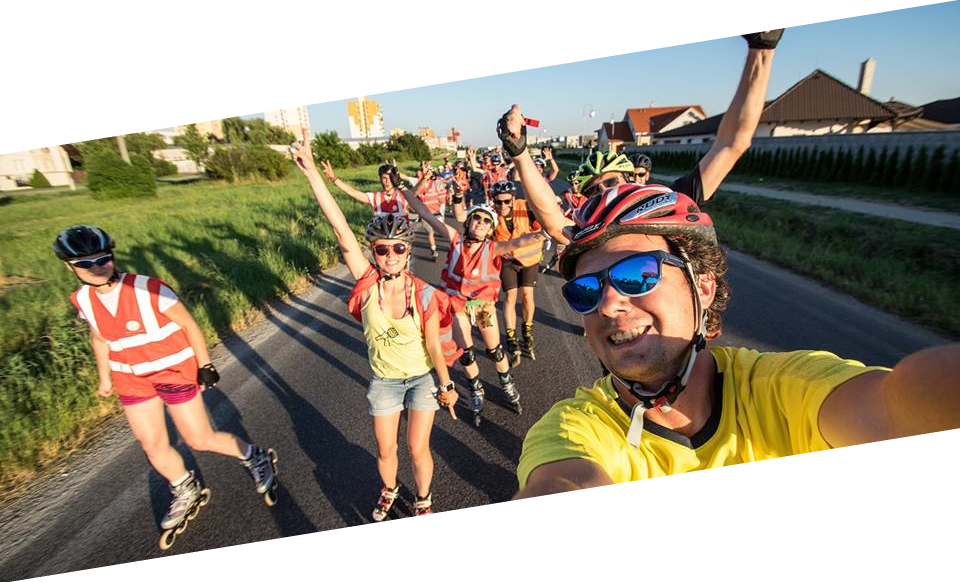
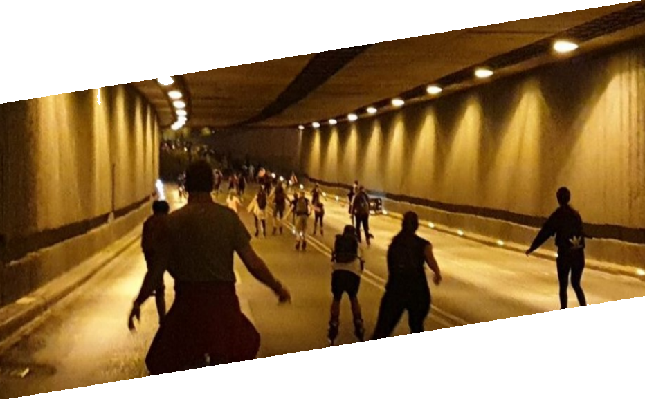

Čo je Topoľčany-inline
- je letná korčuliarska akcia, konajúca sa pravideľne v mestach Bratislava Nitra Piešťany už od roku 2004
- je korčuľovanie po mestských cestách každý piatok alebo cez veekend večer počas letných prázdnin
- je pre mladých, starších, rodiny s deťmi, partie … každého, kto vie korčuľovať
- je zadarmo a bez registrácií
- je za dobrú náladu a radosť zo života ;)

Pravidlá
Naša akcia má jednoduché pravidlá, ktoré treba dodržiavať. Preto maj na pamäti:
- každý jazdí na vlastnú zodpovednosť
- musíš vedieť rýchlo zabrzdiť, korčuľovať v dave a udržať tempo jazdy
- korčuľuj vpravo a predbiehaj vľavo
- ak si náhodou na bicykli, zaraď sa až za korčuliarov
- počúvaj pokyny polície, zdravotníkov a inline teamu, daj im vždy prednosť v jazde
- pri prekážke alebo brzdení zdvihni ruky nad hlavu
- MaPRka (maximálna povolená rýchlosť) je daná prvým policajným autom, MiPRka (minimálna povolená rýchlosť) je daná posledným policajným autom
- odpadky nehádž na zem, ale do koša, aby naše mestá zostali pekné a čisté
- dodržuj pitný režim, maj pri sebe dostatok tekutín
- fajčenie športovcom nesvedčí, nezapaľuj si cigaretu v dave
- maj pri sebe doklady, budeš ich potrebovať, ak by sa ti niečo stalo, alebo ak vyhráš darček
- bezpečnosť je vždy na prvom mieste - dávaj na seba pozor - nos prilbu a chrániče!

Kedy
3.9 a vybrané piatky v Septembri.
- 16.00 stretnutie - na mieste štartu. Hudba
- 17.00 štart parkovisko ZS. svätého Ladislava, Lipová, mravenisko
- 17.20 čakáme sa a otáčame pred Lidl Odbojárov Tovarniky
- 17.40 čakáme sa a otáčame pred ZS
- 18.00 čakáme sa a otáčame pred lidl
- 17.40 čakáme sa a otáčame pred ZS
- 18.00 čakáme sa a otáčame pred Lidl
- 18.20 návrat pred ZS a koniec akcie
Trasa
Jazdíme po cestách, ktoré bežne patria autám s doprovodom štátnej i mestskej polície, zdravotníkov, sanitky a 7-členného inline-teamu. Trasy starostlivo plánujeme s ohľadom na aktuálny stav ciest, rozkopávky a dopravnú situáciu v spolupráci s Políciou a Magistrátom či Miestnym úradom miest, kde sa akcie konajú. Trasy a miesta štartu sa v Topoľčanoch budu striedať. Ak všetko pójde ako má, tak tento rok pravdepodobne pribudnú nové trasy v nových mestských častiach Topoľčian.
Čo Topoľčany-inline nie je
- nie je súťaž
- nie je na ňu potrebná registrácia
- nie je manifestácia za niečo, alebo proti niečomu
- nie je spojená so žiadnym hnutím, politickou stranou alebo inou ideologickou organizáciou
Partneri a spoluorganizátori
Notifikacie
Akcia sa koná len v prípade dobrého počasia, a dost. počte dobrovolnikov.
Ak Chcete dostávať informácie o jazdách, zadájte váš email a potvrdíte odber.